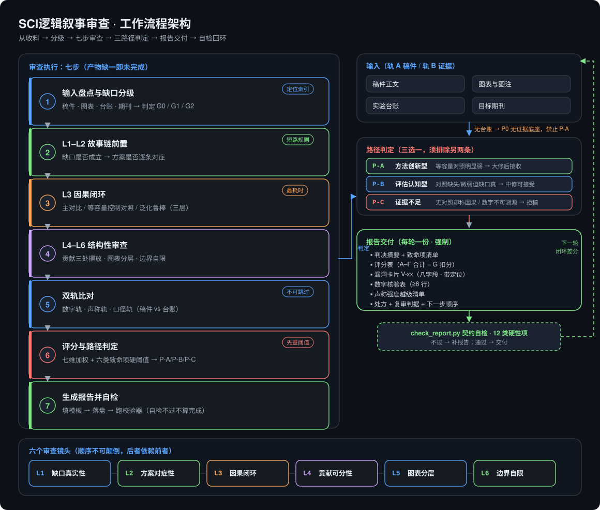
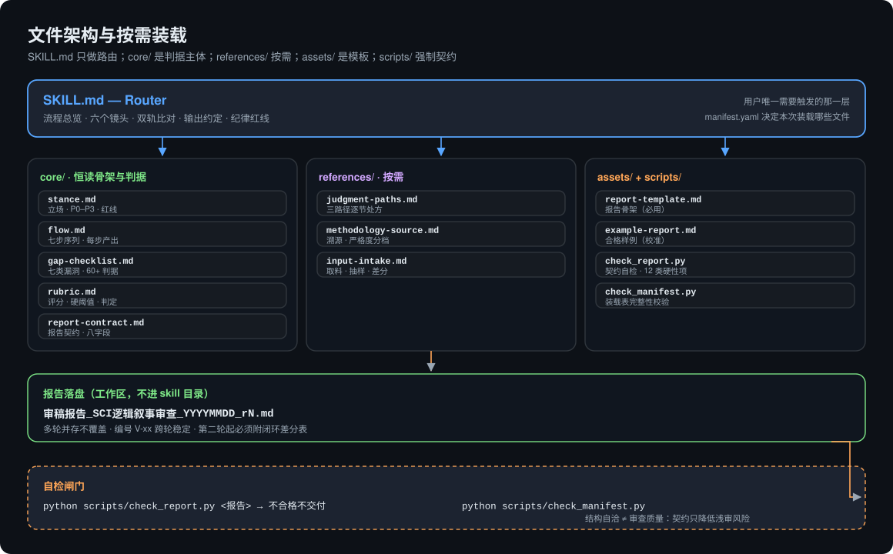

七步执行 · 六个镜头 · 双轨比对 · 三路径判定 · 每轮强制出报告 · 自检回环

check_report.py 自检通过后才交付，然后带闭环差分进入下一轮。
底部六个镜头按依赖顺序推进——后一个镜头依赖前一个的结论。

SKILL.md 只做路由；core/ 是恒读的骨架与判据主体；references/ 按需装载；
assets/ 提供报告骨架与合格样例；scripts/ 强制执行契约。
报告落在你的工作区，不进 skill 目录——多轮并存、编号跨轮稳定。
不是"把文字改好看"，而是"在审稿人之前找到结构性漏洞"。
一篇评分 90/100 的稿子，可能被一个缺失的等容量控制组卡死。分数再高，硬阈值不过就是不过。
一句"提升 4%"，可能只是多了 4% 的参数。没有等参数占位对照，设计贡献不可采信。
零漏洞被视为不可能。找不到问题，唯一合法解释是输入不全——报告必须明说，不许宣布通过。
每一条都对应 skill 里可执行的文件与规则，不是空话。
核心规则：没有报告 = 审查没做。"整体质量不错""建议润色"这类话在契约层面被禁用——你拿到的是判决，不是安慰。
八项必填字段：类别、严重度、定位（章节+原文引文）、证据、审稿人原话、为什么有问题、修改处方、复审判据。写不出位置的"感觉不好"直接删。
缺口真实性 → 方案对症 → 因果闭环 → 贡献可分 → 图表分层 → 边界自限。顺序不可颠倒，后面的结论才不会失焦。
稿件（轨 A）对实验台账（轨 B），比数字轨、声称轨、口径轨。台账缺失不默认数字为真，记为 P0 并压低判定。
P-A 方法创新型 / P-B 评估认知型 / P-C 证据不足。必须说明为什么不能走另外两条，以及升一档的最小成本。
七维加权 100 分，数字可溯源是必扣项。六类致命项（F1–F6）任一命中，总分再高也不给 P-A。
每条漏洞带可执行处方；三路径各配逐节改写动作与能真正改变判定的最小实验集。"多补点实验"被明令禁止。
编号 V-01 跨轮稳定。第二轮起必须附闭环差分表：已修复/部分修复/未修复/申诉成立，并附本稿证据。
零依赖 Python 校验器检查 12 类硬性项，包括判定与预估结果自洽（P-C 永远不能配"小修"）。自检不过不交付。
| 镜头 | 审什么 | 抓到的典型症状 |
|---|---|---|
| L1 缺口真实性 | 是否指出领域内默认成立却未被定量质疑的假设，并说明造成什么具体偏差 | 开篇直接介绍数据集；缺口写成"现有方法精度不足" |
| L2 方案对症性 | 每个模块是否对应 L1 的某一条缺陷 | 模块凭空出现；动机写成"为了提升性能" |
| L3 因果闭环 | 三层实验（主对比 / 等容量对照 / 泛化鲁棒）是否齐备且有统计检验 | 归因于设计，但参数量同时增加了 |
| L4 贡献可分性 | 三条贡献是否独立、各有专属实验、三处摆放一致 | 三条贡献是同一句话换三种说法 |
| L5 图表分层 | 机制图在先还是数字堆砌在先；表是否分组；显著性标注是否齐 | 一张巨表混装消融、对比与鲁棒性 |
| L6 边界自限 | 讨论是否写明失效条件、数据范围、与文献的本质区别 | 讨论只复述结果；宣称"通用"却无跨域证据 |
真实的稿件大多属于 P-B。硬撑 P-A 是最常见的被拒原因。
| 路径 | 触发条件 | 叙事定位 | 可能结局 |
|---|---|---|---|
| P-A 方法创新型 | 等容量对照明显弱于本方案，且统计显著 | 方法贡献 + 因果闭环 | 大修后接收 |
| P-B 评估认知型 | 对照缺失或差距微弱，但缺口真实、负向结果扎实 | 严谨的实证评估论文，重心是科学发现 | 中修—小修后接收 |
| P-C 证据不足 | 无对照却宣称因果、数字不可溯源、隐藏负向结果 | 先补实验，或先撤声称 | 拒稿 |
下面是示例报告里的一张漏洞卡片（示例内容为虚构）。
### [V-01] 提升与参数量同步增加，无等参数对照，无法区分设计收益与容量红利
- 类别：L3 因果
- 严重度：P0
- 定位：§4.3 «we attribute the 2.6 mAP gain to the gating module» 配合 Tab.3
- 证据：Tab.3 仅两行（完整模型、−模块A），无等参数占位行；§3.2 明示模块新增 0.8M 参数
- 审稿人原话：「作者把 2.6 mAP 的增益归因于门控模块的设计，但该模块同时带来了
0.8M 的参数增量。缺少一个参数量对齐的占位对照，读者无法判断增益来自设计还是容量。」
- 修改处方：在 Tab.3 增加一行"等参数占位模块（同 0.8M 参数、无门控逻辑）"，
同预算训练；若无法补做，则全文删除 attribute ... to 类表述。
- 复审判据：Tab.3 出现参数对齐的占位行且报告其结果；或全文再无因果归因句。| 通用"帮我润色" | SCI逻辑叙事审查 | |
|---|---|---|
| 产出 | 改写后的文字 | 判决 + 漏洞 + 处方 + 复审判据 |
| 依据 | 只有稿件 | 稿件 加 实验台账（双轨） |
| 缺证据时 | 抹平过去 | 记为 P0，压低判定 |
| 漏洞质量 | "可以更清楚" | 章节 + 引文 + 审稿人原话 + 处方 |
| 零漏洞 | 可能出现 | 被明令视为不可能 |
| 多轮 | 每轮从头开始 | 稳定编号 + 闭环差分 |
| 一致性 | 靠人自觉 | 机器校验契约 |
这个 skill 拒绝用诚信换录用。
自包含目录：SKILL.md + manifest.yaml + core/ + references/ + assets/ + scripts/。为 DeepSeek Harness 编写，内容全是普通 Markdown，任何读取 SKILL.md 的框架都能用。
git clone https://github.com/xionglovetian/sci-logic-narrative-review.git
# 用户级（所有项目可用）
mkdir -p ~/.agents/skills
cp -r sci-logic-narrative-review/skills/sci-logic-narrative-review ~/.agents/skills/
# 项目级（只在该项目可用）
mkdir -p .dsh/skills
cp -r sci-logic-narrative-review/skills/sci-logic-narrative-review .dsh/skills/然后直接说：
首轮需要：稿件 + 图表图注 + 目标期刊。提供实验台账才能做完整双轨比对——没有的话报告会标 G1 部分，并禁止判 P-A。
python skills/sci-logic-narrative-review/scripts/check_report.py examples/demo-report.md
python skills/sci-logic-narrative-review/scripts/check_manifest.py这是一套启发式审查框架，预测的是高概率被质疑的结构性问题，不预测录用与否。
理论、纯方法、综述类稿件需要调整权重，调整表在 references/methodology-source.md。
一份技术上通过的报告仍可能是浅审。契约降低了这个风险，但没有消除它。
它说"哪里不行、为什么不行、改成什么样才算行"，不替你写论文。